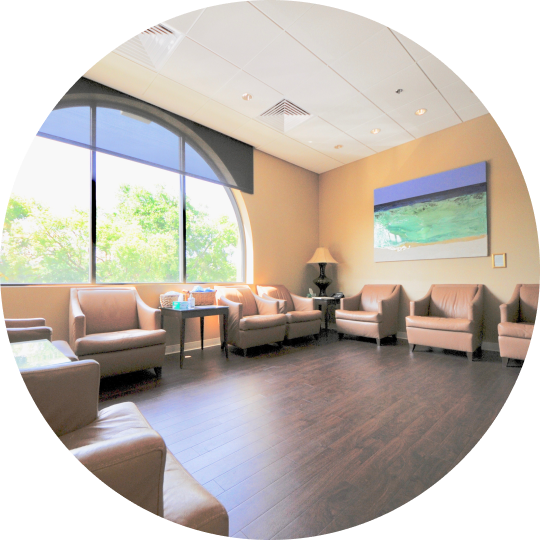

Your Vision. Customized To Your Lifestyle.
Modern vision correction procedures are as unique & customizable as you and your lifestyle.
As Orlando's Leader in Cataract & Refractive Surgery, our specialty is in helping you reach the vision goals that your unique lifestyle demands.